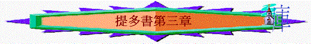

2.整體信徒要學習行善(3)
「你要提醒眾人，叫他們順服作官的、掌權的，遵他的命，預備行各樣的善事。」3:1
「這話是可信的。我也願你把這些事切切實實的講明，使那些已信神的人留心做正經事業（或作留心行善）。這都是美事，並且與人有益。」3:8
「並且我們的人要學習正經事業（或作要學習行善），預備所需用的，免得不結果子。」3:14
〜三節聖經也表達行善，2章題及不同年紀與群體要有善行，令主的道得著榮耀，3章則帶出整體會眾又如何。
〜或許當時民族主義開始抬頭，反羅馬政府的意識也蘊起，信徒應否有類似反政府的表現呢？
〜而他們也受猶太主義及希臘哲學思想影響，喜歡家譜、爭辯、無益的分析，所以3章提醒他們，信徒當作有益的善事，而根據3:1、8、14，我們可以有以下3個分段
A.預備行善的心態(3:1-7)
a.現今的心態
(1)順服
「你要提醒眾人，叫他們順服作官的、掌權的，遵他的命，預備行各樣的善事。」3:1
「在上有權柄的，人人當順服他，因為沒有權柄不是出於神的。凡掌權的都是神所命的。」羅13:1
「凡所行的，都不要發怨言，起爭論，使你們無可指摘，誠實無偽，在這彎曲悖謬的世代作神無瑕疵的兒女。你們顯在這世代中，好像明光照耀，」腓2:14-15
〜信徒有雄心壯志要行善，作美好的表現是好的，但不是想做甚麼就做甚麼，不是單以為好卻不理週圍的環境。
〜人要學習順服在上的掌權者，遵守地上政府的命令。
〜因神賜人有次有序，地上掌權的是神所命的，人要順服神所命而有權柄的人。
〜人有了順服後，自然會按地上法則行正確的事，人也看這些表現為善，信徒更不易被世人所指摘。
〜當然「順服」也是神看為美善的事！
(2)柔和
「不要毀謗，不要爭競，總要和平，向眾人大顯溫柔。」3:2
〜人要順服，內心必須有柔和的人，有柔和心之人，與地方官員，與別人相處更易和睦，但人的心若沒有溫柔，就易有不滿，更會產生對抗、毀謗、爭競行動！
b.從前的樣式
(1)沒有順服
「我們從前也是無知、悖逆、受迷惑、服事各樣私慾和宴樂，常存惡毒（或作陰毒）嫉妒的心，是可恨的，又是彼此相恨。」3:3
(A)是無知悖逆
(B)只順服私慾
(2)沒有溫柔
(A)充滿惡毒
(B)充滿嫉妒
(C)充滿惡恨
〜從前我們根本不能順服別人，不能向眾人大顯溫柔，因為我們的心是悖逆，沒有良善、柔和的，反而是有惡恨、惡毒，常有與人相爭的心！
c.救恩的改變
(1)憐憫的拯救
「但到了神我們救主的恩慈和他向人所施的慈愛顯明的時候，他便救了我們，並不是因我們自己所行的義，乃是照他的憐憫，藉著重生的洗和聖靈的更新。」3:4-5
(2)重生的洗淨
∼「重生的洗」不是指受洗禮而得重生，而是〝washing
of regeneration〞重點是重生，救恩帶來新生命，如水一樣，洗去污穢，整個人也潔淨起來！
(3)聖靈的更新
〜〝renewing
of the Holy Ghost〞聖靈藉主的差遣，主的救恩能力，將聖靈厚厚(richly)傾倒(poured out)給我們，便有更新的生命，從前不能順服，沒有柔和良善，現在卻不同，一切都更新了！
(4)身份的改變
「好叫我們因他的恩得稱為義，可以憑著永生的盼望成為後嗣。（或作可以憑著盼望承受永生）。」3:7
(A)得稱為義
(B)成為後嗣
B.留心行善的阻礙(3:8-11)
a.持守美善事
「這話是可信的。我也願你把這些事切切實實的講明，使那些已信神的人留心做正經事業（或作留心行善）。這都是美事，並且與人有益。」3:8
〜留心作正經事業或作留心行善，英文〝careful
to maintain good works〞
〜我們行善不是一剎那，是要持續，繼續不斷行的，因為是美事，是與人有益。
b.遠避虛浮話
「要遠避無知的辯論和家譜的空談，以及分爭，並因律法而起的爭競，因為這都是虛妄無益的。」3:9
〜但要小心，有些事情，不但對行善事上無益，更惹來不必要的爭端。
〜例如：「家譜」----猶太人重視自己是甚麼支派、血統，也重視靠律法而稱義，他們往往因為本身的執著而有不必要的空談、紛爭、爭競。
〜人太著重一些虛談，反而令那人的心更易不柔和，更少了實際作正經事及行為與生命中表露善行，相反沒有良善，卻來結黨分爭！
c.棄絕結黨者
「分門結黨的人，警戒過一兩次，就要棄絕他。因為知道這等人已經背道，犯了罪，自己明知不是，還是去做。」3:10-11
「弟兄們，若有人偶然被過犯所勝，你們屬靈的人就當用溫柔的心把他挽回過來；又當自己小心，恐怕也被引誘。」加6:1
〜有些結黨分爭的人，若終不回轉，要棄絕他們，因他們明知不是仍去作，已是十分悖逆的，信徒也不要受他影響繼續專心行善的心！
C.學習行善的行動
〜人行善，不是單是留心及預備，而是要有實際預早的行動的！
a.提多----實際的行動----支援神僕
「我打發亞提馬或是推基古到你那裡去的時候，你要趕緊往尼哥波立去見我，因為我已經定意在那裡過冬。你要趕緊給律師西納和亞波羅送行，叫他們沒有缺乏。」3:12-13
「我已經打發推基古往以弗所去。我在特羅亞留於加布的那件外衣，你來的時候可以帶來，那些書也要帶來，更要緊的是那些皮卷。銅匠亞力山大多多的害我；主必照他所行的報應他。」提後4:12-13
〜保羅叫提多到他那�塈@甚麼？可能與「過冬」有關，或許叫提多如提摩太一樣帶衣服給保羅，或來到保羅身邊，成為保羅的支持與安慰。
〜另外，亞波羅曾與保羅同工的，西納可能也是與亞波羅都是旅行佈道者，保羅要提多作善事，送他們行，給他們旅途上的需要，令他們沒缺乏的。
b.眾人----實際的行動----及早工作
「並且我們的人要學習正經事業（或作要學習行善），預備所需用的，免得不結果子。」3:14
「好叫你們行事為人對得起主，凡事蒙他喜悅，在一切善事上結果子，漸漸的多知道神；」西1:10
〜信徒也不要閒懶，努力及早作工，免致後來有缺乏，而且在善事上及幫助人上要努力，免得在善中不能結果子，虛度一生！
問安祝願
「同我在一處的人都問你安。請代問那些因有信心愛我們的人安。願恩惠常與你們眾人同在。」3:15